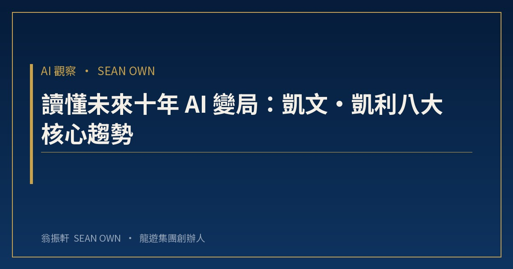
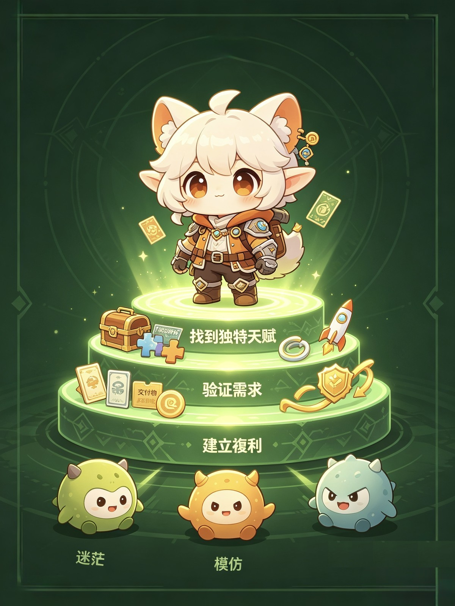
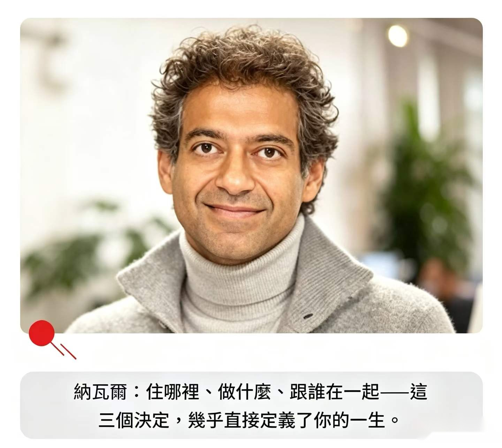
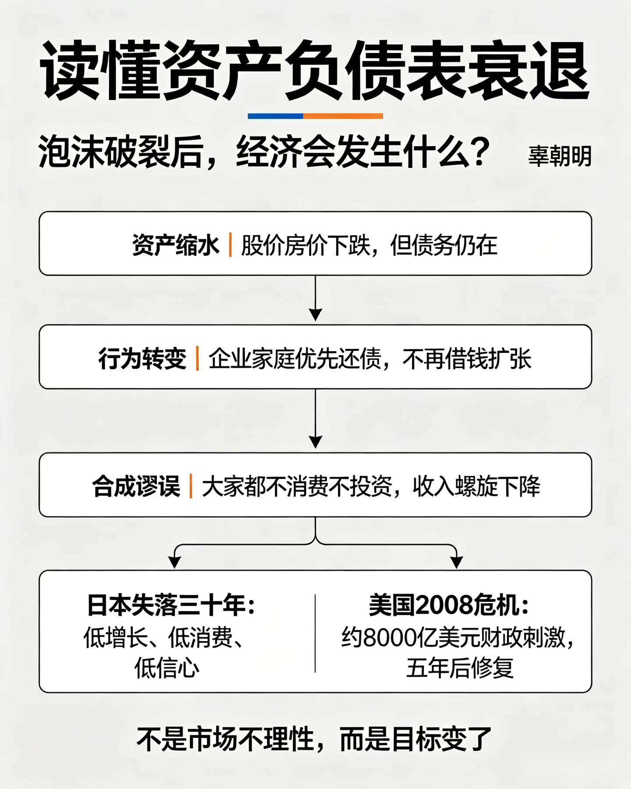

有些課，學校不會教，但人生與事業遲早要面對：一筆天使投資怎麼看、一場 AI 變局怎麼讀、一個文化 IP 怎麼走出去、一次次創業轉折怎麼選。
這一輯「軒哥小課堂」，把我這些年踩過的坑、想通的理，拆成一堂堂實戰課：從跟 Paulo Andrez 學天使投資，到凱文・凱利的 AI 八大趨勢；從中華文化 IP 的全球化路徑，到三次創業轉折的選擇方法論。不灌雞湯，只講能落地的底層邏輯。

13 / 132026.10.10· 澳門讀懂未來十年 AI 變局：凱文・凱利八大核心趨勢
最近，《連線》雜誌創始主編凱文・凱利（Kevin Kelly，圈內簡稱 KK），於2026年 9月 21日線上參加長…
› 12 / 132026.10.09· 澳門
12 / 132026.10.09· 澳門跟 Paulo Andrez 學天使投資
有人說，天使投資是九死一生的賭博，十投九虧，剩下的一個還要看命。我不這樣看。真正懂的人、有經驗的人，是可以做到零風險…
› 11 / 132026.10.08· 澳門
11 / 132026.10.08· 澳門領導是做對的事，管理是把事做對
一、商會不是只辦活動的很多商會的幹事，一年做完幾場活動、發幾十封會訊，年底算一算覺得該做的都做了，但隔年開會的時候，…
›
10 / 132026.09.12· 澳門納瓦爾：三步找到「天生該吃這碗飯」的領域
在「成為自己」這件事上，沒有人能比你做得更好。—— 納瓦爾 如果你還在迷茫該做什麼、往哪走，別急著模仿別人。納瓦爾用…
›- 09 / 132026.09.11· 澳門
財富與時代槓桿：新時代澳門文化商業的佈局思維
長期以來，多數人對於賺錢、經營與創業的理解，大多停留在「付出勞動，換取酬勞」的單一邏輯。但隨著產業迭代、國際格局重組…
› 
08 / 132026.08.23· 澳門三個選擇，定義你的一生
年輕人做對3個決定，足以拉開人生差距矽谷納瓦爾：住哪裡、做什麼、跟誰在一起，這三個決定，幾乎直…
›- 07 / 132026.08.22· 澳門
年賺上億，房租漲1600萬仍可盈利，卻直接停業
（胖東來金句）當年新鄉大胖店，是于東來團隊一步步把冷清的商圈做旺，門店…
› 
06 / 132026.08.17· 澳門讀懂辜朝明「資產負債表衰退」📊
為什麼降息、印錢，有時候救不了經濟？🔹核心3個邏輯1️⃣泡沫破裂之後：股價房價資產大幅…
›- 05 / 132026.06.15· 澳門 · 龍遊集團總部
AI跨境服務的澳門方案
核心挑戰中國企業出海面臨的最大痛點不是技術，而是數據跨境合規。各國數據主權法規日益嚴格，傳統單一伺服器架構無法滿足合…
› - 04 / 132026.05.20· 澳門
從CTR 22.7%到80%：AI內容營銷的躍遷
傳統內容營銷的瓶頸傳統跨境電商內容製作週期長、成本高、語種覆蓋有限。一個產品上綫8個市場，需要至少8套內容素材，耗時…
› - 03 / 132026.03.05· 澳門
中華文化IP的全球化路徑
文化IP的價值中華文化是寶貴資源，但長期以來「有資源、無產業」的問題突出。如何把文化資源轉化為文化資產，再轉化為文化…
› - 02 / 132026.02.18· 澳門
青年企業家的跨界思維
跨界的本質很多人以為跨界是「什麼都做」，其實真正的跨界是底層能力的遷移。無論是食品、科技還是文化，核心能力都是： 資…
› - 01 / 132026.01.10· 澳門
選擇比努力重要：我的三次創業轉折
第一次選擇：回大陸2001年從UC Berkeley畢業，放棄美國的工作機會回大陸。當時很多人不理解，但我看到了中國…
›